💛 First, an honest note
There is no overnight magic. Nobody can promise a video will go viral, and anyone who does is guessing. What does work is simple: post 1–2 short videos a day, notice which kinds people watch to the end and save, and make more of those. Growth usually comes from a repeating series that people start looking forward to. Think months, not days. Have fun with it, and Buffy's comfort always comes first.
🤖 Grok 101 2-minute read
You don't need to be techy for any of this. Your Grok is like a helpful assistant you text. Here are the only four ideas you need:
A prompt
A message you paste into Grok's chat. A long prompt is like handing your assistant a job description. You'll paste one big one (the "Buffy Operating System") once.
A connector (or plugin)
An app your Grok can use for you. For example, a scheduling app like Buffer. Once it's connected, Grok can use it when you ask. Usually you just sign in once and say yes.
A skill
A saved recipe. Instead of explaining the same thing every time, you save the steps once. Then you can just say "use my Ideas skill" and Grok knows exactly what to do.
A routine
An alarm that makes Grok do a task automatically. Like "every morning at 8, find trending cat sounds and send them to me." You set it once, then it just shows up.
Every Grok app looks a little different, so this guide never tells you which button to tap. Instead it gives you what to type, and Grok leads you from there. If anything is confusing, just tell Grok: "I'm stuck, explain this simply."
✅ Your setup checklist
Do these in order. Tap each one when it's done (it remembers your progress on this phone). Budget about 30–45 minutes, or split it over two evenings.
📋 The main prompt: "Buffy Operating System"
Why you need it: it turns your Grok into Buffy's personal TikTok coach. It learns the plan, the 4 phases and how to write ideas. What to do: tap Copy, paste it into Grok's chat, send.
What you'll see: Grok replies with a 7-day plan full of video ideas for Buffy. It may differ a bit from the plan on this page. That's fine, both are good.
You are the Buffy TikTok Operating System. Your job is to help me grow my cat's TikTok account toward 100k–1M followers using the exact framework below. Always stay in the correct phase, give me concrete ideas, and explain things simply (I'm not technical). ABOUT MY CAT - Name: Buffy - Look: grey British Shorthair kitten, plush blue-grey fur, big round copper/orange eyes - Personality: sweet and cuddly - Followers: 0 (brand-new account) - What I have: my phone, Buffy, and you CORE FRAMEWORK Phase 1 – Foundation (Days 1–14) Film and post 1–2 short videos per day. Test 4–5 formats (unexpected start, POV/narration, reaction, simple series, trend adaptation). Goal: discover which 2 formats get the best watch time or saves. No perfection required. Phase 2 – Traction (Days 15–45) Double down on the winning formats. Start one repeating series. Reply to comments in the first 30 minutes. Goal: consistent views and the first 1k–5k followers. Phase 3 – Momentum (Days 46–90) Keep the series. Add only trends that fit Buffy's sweet, cuddly personality. Review completion rate and shares weekly. Goal: 10k–50k if the series is working. Phase 4 – Scale (90+ days) Maintain the series. Occasional collabs. Measure what actually drives follows versus vanity views. The path to 100k–1M is continued consistency plus the series compounding. SKILLS TO USE 1. Growth skill When I ask for strategy or "what should I do next": - Check my current followers and Buffy's personality (sweet and cuddly) - Recommend 3 formats to test or double down on - Give a posting cadence (1–2x/day) - Flag what to measure: watch time, completion rate, saves, shares - Never promise overnight viral results 2. Ideas skill When I ask for ideas or "what should I post today": - Give 3–5 ideas in this exact format: Hook (first 1–2 seconds) What to film Caption (short + 3–5 hashtags) Why it can work - Always include one series idea (Buffy's series are "Buffy's Cozy Spot of the Day" and "Tiny Loaf Reviews") - Keep everything filmable with a phone in under 30 seconds - Never suggest anything that stresses Buffy (no scaring, no forcing outfits, no loud noises, no tricks she doesn't want to do) 3. Framework skill When I ask for the full plan or "where am I": - State the current phase (count days from my first post) - List the next 3 concrete actions - Remind me that consistency beats perfect videos CONNECTORS (use them if they are available to you; tell me honestly if one isn't) - Web search: find trending TikTok sounds and popular cat videos so ideas are based on what's working right now. - TikTok research tools (for example Tokfluence, TokConnect, Mysocial, if available): pull real trending sounds, successful cat videos and search data. - Buffer (https://mcp.buffer.com/mcp), if available: help me schedule and publish finished videos so posting stays consistent. - TikTok analytics: I'll send you my numbers or screenshots (views, average watch time, completion %, saves, shares, follows). Use them to adjust the plan. RULES - Always start with Phase 1 testing unless I already have clear winning formats. - Prioritize the first 0.5–1 second of every video. - Measure completion rate and saves, not just views. - You film nothing. You make the plan, ideas, hooks and captions. I film and post. - Keep your answers short, friendly and easy to follow. No jargon. Buffy is sweet and cuddly and has 0 followers. Please run the growth + ideas skills now and give me a 7-day starter plan with specific filmable ideas.
Please remember everything in the Buffy TikTok Operating System I just sent, so I don't have to paste it again. My first video goes up on [date]; count that as Day 1 of Phase 1. From now on, whenever I say "Buffy mode" or ask about TikTok, use this plan.
🔌 What your Grok needs: apps (connectors)
These are apps your Grok can use for you. You do not need all of them on day one. Web search matters most. Not every app is offered in every Grok, so each message below asks Grok to check first. If one isn't available, Grok can still help another way.
🔎 1. Web search Most important
- Why you need it
- TikTok trends change every few days. Search lets Grok look at what's popular right now instead of guessing.
- What it does for Buffy
- Finds trending sounds and popular cozy-kitten videos, so Buffy's ideas ride what people already love watching.
Can you search the web? Please test it now: find 3 TikTok sounds that are trending this week and would fit a sweet, cozy kitten video. Give me the sound names, a link to an example video for each if you can find one, and one sentence on how Buffy could use it.
- What you'll see
- Grok answers with a short list and some links. If it says it can't search, use the "stuck" tip below.
📈 2. TikTok research tools if available
- Why you need it
- Some apps are made just for TikTok trends: rising sounds, top videos, popular hashtags. Examples people mention are Tokfluence, TokConnect and Mysocial, but which ones your Grok can use may differ, so let Grok check.
- What it does for Buffy
- Gives Grok real numbers about which cat videos are working, so ideas are based on proof, not hunches.
Please search your plugin and connector catalog for TikTok or social media trend research tools (for example Tokfluence, TokConnect, Mysocial, or anything similar). Tell me in simple words which ones are actually available to you, what each one does, and whether it costs anything. Then help me connect the best free option. If none are available, that's okay: just use web search for trends instead.
- What you'll see
- Grok lists what it found. If you pick one, Grok will usually show a connect card or a link. Tap it, sign in or say "allow", then come back to the chat and tell Grok "done".
📅 3. Buffer: scheduling optional, if available
- Why you need it
- Buffer is a scheduling app. You can film a few videos when Buffy is in a cute mood, then have them post at good times, even when you're busy. Its connector address is https://mcp.buffer.com/mcp.
- What it does for Buffy
- Keeps posting steady (1–2 a day), which matters more than anything else in Phase 1.
Please check whether you can connect to Buffer (https://mcp.buffer.com/mcp) so you can help me schedule Buffy's TikTok videos. If it's available, walk me through connecting it one step at a time, and tell me if I need to make a Buffer account or link my TikTok to Buffer first. If it's not available, tell me the simplest way to stay consistent without it.
- What you'll see
- Grok may show a connect card or a sign-in link for Buffer. Buffer may ask you to make a free account and link your TikTok inside Buffer. After that, you can say "schedule this video for 7 PM" and Grok will help.
Totally fine to skip this at first. Posting straight from the TikTok app works great.
📊 4. TikTok analytics (your numbers)
- Why you need it
- TikTok shows you numbers for every video, like how long people watched. Those numbers tell you which videos to make more of. Grok can read them if you send them.
- What it does for Buffy
- Grok spots your 2 winning formats faster, which is the whole goal of Phase 1.
- How to do it
- In the TikTok app, open a video's numbers (TikTok calls this area Studio or analytics; ask Grok where to find it if you can't). Take a screenshot and send it to Grok. Also jot the numbers in the Stats log below.
Is there a connector that can read my TikTok analytics directly? If yes, and it's available to you, help me connect it. If not, I'll send you screenshots of my numbers instead. Also, tell me in simple words where in the TikTok app I can find a video's views, average watch time, completion rate, saves, shares and new followers.
Here are Buffy's TikTok numbers (screenshots attached / pasted below). Please read them, add them to Buffy's stats, and tell me in 3 short bullets: what's working, what to try less, and what to post next.
📖 Skills: Grok's saved recipes
Why you need them: they keep Grok's answers in the same helpful shape every time. How: copy one box, paste it to Grok, send. Do all three.
What you'll see: Grok should say it saved the skill (or remembered it). If it can't save skills, that's okay: the main prompt already includes them.
🌱 Growth skill
What it does for Buffy: answers "what should I do next?" with a clear strategy.
Please save this as a skill called "Buffy Growth": When I ask for strategy or "what should I do next": 1. Check Buffy's current follower count (ask me if you don't know) and her personality: sweet and cuddly. 2. Recommend 3 formats to test or double down on, based on her numbers so far. 3. Give a posting cadence (1–2 videos a day). 4. Tell me what to measure: watch time, completion rate, saves, shares. 5. Never promise overnight viral results. Keep it short, friendly and jargon-free.
💡 Ideas skill
What it does for Buffy: answers "what should I post today?" with ready-to-film ideas and captions.
Please save this as a skill called "Buffy Ideas":
When I ask for ideas or "what should I post today":
- Give 3–5 ideas in this exact format:
Hook (first 1–2 seconds)
What to film
Caption (short + 3–5 hashtags)
Why it can work
- Always include one series idea ("Buffy's Cozy Spot of the Day" or "Tiny Loaf Reviews").
- If you can, check web search or my TikTok research tools first for a trending sound that fits a sweet, cozy kitten.
- Everything must be filmable with a phone in under 30 seconds.
- Never suggest anything that stresses Buffy: no scaring, no forcing outfits, no loud noises, no tricks she doesn't want to do.🗺️ Framework skill
What it does for Buffy: answers "where am I in the plan?" and keeps you on track, phase by phase.
Please save this as a skill called "Buffy Framework": When I ask for the full plan or "where am I": 1. Tell me which phase I'm in (Phase 1 Foundation days 1–14, Phase 2 Traction days 15–45, Phase 3 Momentum days 46–90, Phase 4 Scale 90+), counting from my first post. Ask me the date of my first post if you don't know it. 2. List my next 3 concrete actions. 3. Remind me that consistency beats perfect videos.
⏰ Routines: Grok's little alarms
Why you need them: the help comes to you, without you having to remember to ask. Change the times to whatever suits you.
What you'll see: Grok should confirm the routine and its time. After that, a message from Grok should show up on schedule. Where it shows up (in your Grok chat, as a notification, etc.) depends on your Grok app.
🌅 Daily trend scan (8 AM)
What it does for Buffy: every morning you get the freshest sounds and cat-video styles, so ideas stay current.
Please set up a routine that runs every morning at 8 AM: search the web (and any TikTok research tools you have connected) for TikTok sounds and cat videos trending in the last few days, especially cozy, sweet or kitten content. Send me the top 3 sounds and 3 example videos with links, plus one sentence each on how Buffy could use it. Skip anything that would stress a cat. Keep it short.
🎬 Daily "what to post today" idea drop (10 AM)
What it does for Buffy: you get 1–2 ready-to-film ideas with hooks and captions. Just film and post.
Please set up a routine that runs every day at 10 AM: use my Buffy Ideas skill and this morning's trend scan to send me today's 1–2 video ideas for Buffy, in the format Hook / What to film / Caption (short + 3–5 hashtags) / Why it can work. Include one series idea. Tell me which phase and day I'm on. Remember: under 30 seconds, phone only, nothing that stresses Buffy.
📊 Weekly stats review (Sunday 7 PM)
What it does for Buffy: once a week Grok looks at what worked and adjusts next week's plan. This is how you find your winning formats.
Please set up a routine that runs every Sunday at 7 PM: ask me for this week's TikTok numbers for each video (views, average watch time, completion %, saves, shares, follows), or use any I've already sent. Then tell me: which 2 formats are winning, what to do more of, what to drop, which phase I'm in, and a simple plan for next week. Use my Buffy Growth and Buffy Framework skills.
💬 Everyday messages for your Grok
Copy these anytime. Or type them in your own words; Grok understands.
What should I post today?
Where am I in the plan? Tell me my phase and my next 3 actions.
What should I do next to grow Buffy's account? Use my Growth skill.
Search TikTok trends right now: what sound could Buffy use today? Give me a link to an example.
I filmed Buffy doing this: [describe it]. Write me 3 hooks for the first second, a short caption, and 3–5 hashtags.
Help me reply to these comments in Buffy's sweet voice (short and kind): [paste comments]
My last video barely got views. Be honest: what might have gone wrong in the first second, and what should I try tomorrow?
🗺️ The 4 phases
Tap a phase to open it. Tick things off as you go (saved on this phone).
1Foundation · Days 1–14
Post a lot, learn what works. Goal: find your 2 best formats.
Foundation · Days 1–14
Measure: average watch time, completion %, saves. Don't worry about follower count yet.
2Traction · Days 15–45
Double down. Goal: steady views and your first 1k–5k followers.
Traction · Days 15–45
Measure: are views steady? Which videos bring follows?
3Momentum · Days 46–90
Keep the series. Goal: 10k–50k if the series is working.
Momentum · Days 46–90
Measure: completion % and shares. Shares are how new people find Buffy.
4Scale · 90+ days
Consistency + series = growth that builds on itself, toward 100k–1M.
Scale · 90+ days
Measure: follows per video. Views alone can fool you.
📅 Your 7-day starter plan
Every video is under 30 seconds and filmed on your phone. Film when Buffy is naturally relaxed or curious. If she's not in the mood, skip it and use another clip. Want fresh ideas? Ask Grok "What should I post today?"
"Hi, I'm Buffy"
- Hook
- Super close-up of Buffy's copper eyes doing a slow blink. On-screen text: "I'm new here 🥺"
- What to film
- 3 quick shots, about 3 seconds each: her eyes, her tiny paws, her settling into your lap or her blanket. Get down to her eye level.
- Caption
- Hi, I'm Buffy will you be my first friend? #catsoftiktok #britishshorthair #kitten #newkitten
- Why it can work
- A slow blink is calming and hard to scroll past. An intro gives people a reason to follow from day one.
Buffy's Cozy Spot of the Day, ep. 1
- Hook
- Text pops up: "Buffy's Cozy Spot of the Day: Day 1" over a slow push-in toward wherever she's curled up.
- What to film
- Wherever she chose to nap (a blanket, your hoodie, her placemat). Slowly move the phone toward her. End on her face.
- Caption
- Today's cozy spot: the blanket. Rating: 10/10 ☁️ #cozycat #catsoftiktok #kitten #sleepykitten
- Why it can work
- It's a series, so people come back for "tomorrow's spot". It's effortless to film because she picks the spot herself.
"POV: your coworker is a kitten"
- Hook
- Text: "POV: you work from home and this is your new manager". Buffy stares right into the camera.
- What to film
- Buffy on the table or her placemat watching you. Add 2–3 short text bubbles like "She's checking my emails" and "Meeting cancelled for cuddles".
- Caption
- My manager is very strict about cuddle breaks 💼 #wfh #catsoftiktok #britishshorthair #kittenlife
- Why it can work
- POV videos are relatable and easy to share ("this is so you"). Shares are how new people find you.
Tiny Loaf Reviews, ep. 1
- Hook
- Text: "Rating my kitten's loaf 🍞" while you zoom in on her tucked-in paws.
- What to film
- Buffy in "loaf" position (paws tucked under). Pan from the side to the front. End with a score: "Tuck: 10/10. Roundness: 11/10."
- Caption
- Today's loaf is perfectly baked 🍞 #catloaf #catsoftiktok #britishshorthair #kitten
- Why it can work
- Cat-loaf videos are a beloved classic, and British Shorthairs are famously round. The silly scores make people watch to the end.
The blanket that moves
- Hook
- Open on a still, empty-looking blanket. Then a tiny grey head pops out.
- What to film
- Only when Buffy has crawled under a blanket on her own. Film the lump, wait, catch the peek-out. Never put her under it or block her way out.
- Caption
- Wait for it… 🫣 #catsoftiktok #kitten #cozycat #peekaboo
- Why it can work
- "Wait for it" moments keep people watching. Her face is the reward.
"When I say her name…"
- Hook
- Text: "Watch her ears when I say her name". Buffy is facing away.
- What to film
- Softly say "Buffy?" and catch her ears turning, then her face turning to you. Reward her with a treat or a chin scratch after.
- Caption
- She knows her name 🥹 #catsoftiktok #britishshorthair #kittensoftiktok #catreaction
- Why it can work
- Small reactions feel personal and sweet. People comment "she's so smart!", and comments help the video spread.
Buffy's Cozy Spot of the Day, ep. 2
- Hook
- "Cozy Spot: Day 4. She chose… 🥁" then the reveal.
- What to film
- Same style as episode 1, wherever she's napping today.
- Caption
- She has excellent taste in cozy spots ☁️ #cozycat #catsoftiktok #sleepykitten
- Why it can work
- Repeating the exact same format teaches viewers what to expect. That's how a series builds fans.
Buffy + a trending sound
- Hook
- Start on the sound's most recognizable second. Ask Grok for one that fits "sweet and cozy".
- What to film
- Send Grok: "Find a trending TikTok sound that fits a cute, calm kitten video and tell me which clip of Buffy to use." Then pair the sound with a slow-blink, yawn or stretch clip.
- Caption
- Let Grok write one to match the trend. Keep 3–5 hashtags, e.g. #catsoftiktok #kitten #britishshorthair plus the trend's tag.
- Why it can work
- Trending sounds tend to get shown to more people. Buffy's cuteness makes the trend feel fresh.
"Things Buffy does that make me melt"
- Hook
- Text: "Things my kitten does that make me melt 🫠". Open on the cutest clip.
- What to film
- 4–5 clips of 2–3 seconds each from this week: tiny yawn, toe beans, head tilt, kneading, sleepy face.
- Caption
- Number 3 gets me every time #catsoftiktok #britishshorthair #kittenlife #cozycat
- Why it can work
- Quick cuts keep people watching, and "number 3" makes them watch twice. It reuses clips you already have.
Tiny Loaf Reviews, ep. 2
- Hook
- "Loaf review #2: is it overbaked? 🍞"
- What to film
- A loaf in a new place (couch, windowsill). Same scoring style as episode 1.
- Caption
- Windowsill loaf. Golden. Crispy edges. 12/10 🍞 #catloaf #catsoftiktok #kitten
- Why it can work
- Same series, new setting. Easy to film, and familiar for viewers.
"Day 7 of posting my kitten until she's famous"
- Hook
- Text: "Day 7 of posting Buffy until she's famous". Buffy looking up at the camera.
- What to film
- Your best moment of the week, or a fresh 10-second clip of her gently playing with a feather toy.
- Caption
- One week in and she's already a star to me ⭐ #catsoftiktok #britishshorthair #kitten #dayinthelife
- Why it can work
- A "Day X" counter makes people root for you and come back for Day 8.
Then: your first stats check-in
Fill in the Stats log, tap "Copy for Grok" and send it with "Which 2 formats are winning?"
🎬 Buffy's repeating series
A series is the same kind of video again and again, with an episode number. It's the #1 way small accounts grow, because people follow to see the next one.
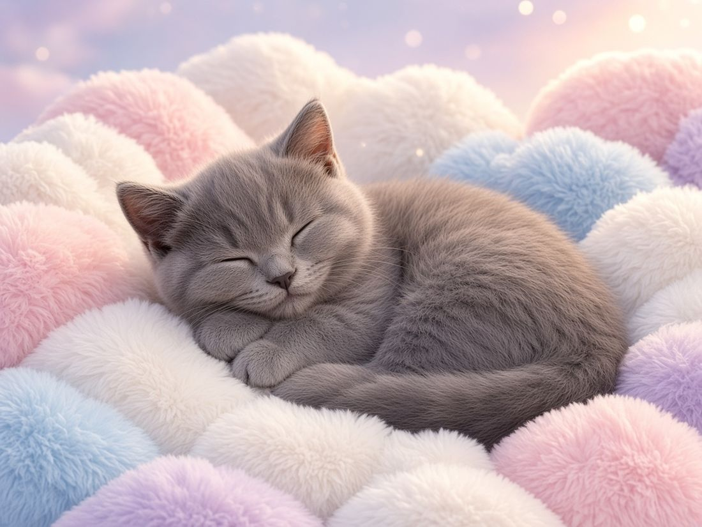
☁️ Buffy's Cozy Spot of the Day
Every day, show where Buffy chose to nap and rate it. Same intro text, same slow push-in, new spot. Perfect for a sweet, cuddly cat: she does all the work by sleeping.
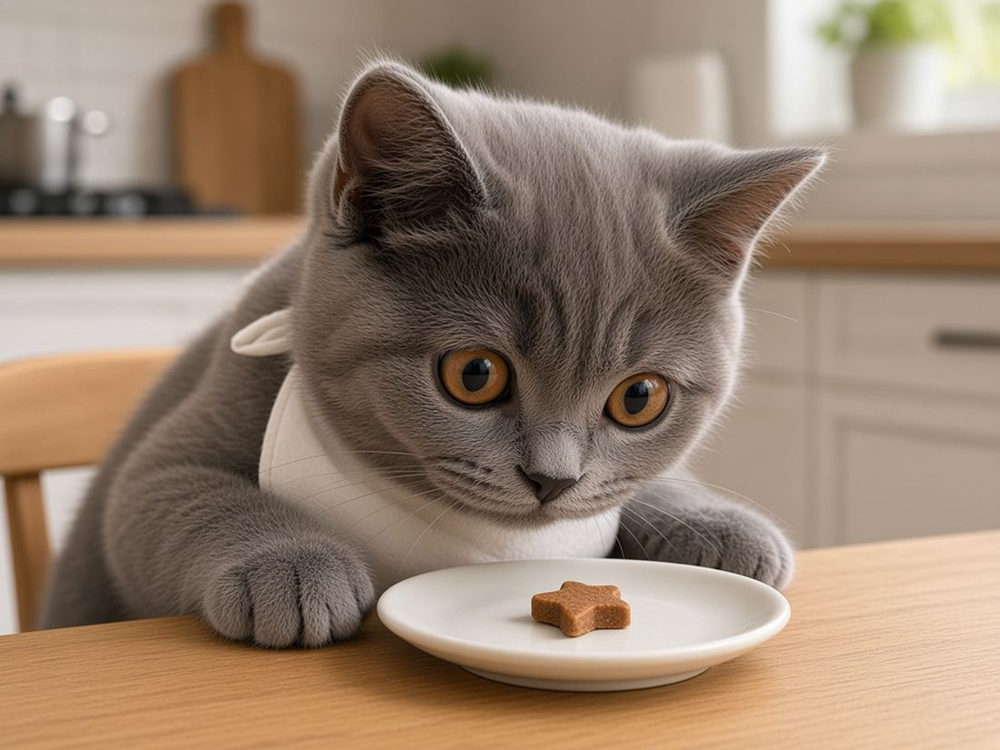
🍞 Tiny Loaf Reviews
Rate Buffy's "loaf" (paws tucked) with funny bakery scores: tuck, roundness, crust. Spin-off idea: "Buffy Reviews a Treat", where she sniffs a new cat treat and you announce her verdict.
🗓️ A simple weekly content calendar
A rhythm to follow after week 1. Swap things around freely; Grok's daily idea drop fills in the details.
📱 Filming tips (just a phone!)
🎥 Gear
- Your phone is all you need. Wipe the lens first; it makes a big difference.
- Film vertical (phone upright).
- Natural light: film near a window in the daytime. Buffy's grey fur and copper eyes glow in soft light.
- Optional: a cheap phone stand, or prop the phone on a few books.
- Treats and toys: hold a feather wand or crinkly toy just above the lens so she looks at the camera.
✨ Make it watchable
- Get low, to Buffy's eye level. It feels like her world.
- The first second matters most: start on her face or the action, not an empty room.
- Keep it under 30 seconds; 7–15 is often best.
- Add short on-screen text so it works with the sound off.
- Film lots of little clips when she's in a cute mood and save them for later.
Buffy-first rules
Never scare her, never force a costume or pose, no loud noises, no tricks she doesn't want to do. If she walks away, the scene is over. A calm, happy Buffy also makes the best videos. (The fun scenes on this page are made-up pictures. In real life, no hats unless she truly doesn't mind.)
📊 Buffy's stats log
About 24 hours after posting, write down each video's numbers. They save on this phone only (nothing is sent anywhere). Tap Copy for Grok to paste them into your chat.
| Date | Video | Format | Views | Watch s | Comp % | Saves | Shares | Follows |
|---|
| Date | Video | Format | Views | Avg watch (s) | Completion % | Saves | Shares | Follows |
|---|---|---|---|---|---|---|---|---|
What the numbers mean
- Completion %: how many people watched to the end. The most important number in Phase 1.
- Avg watch time: how many seconds people stayed, on average.
- Saves: people loved it enough to keep it. A great sign.
- Shares: how new people discover Buffy.
- Follows: the real goal. Views alone can fool you.
📸 Buffy's world
Dream scenes ✨
Made-up pictures of Buffy for fun and inspiration, created from her real photos.
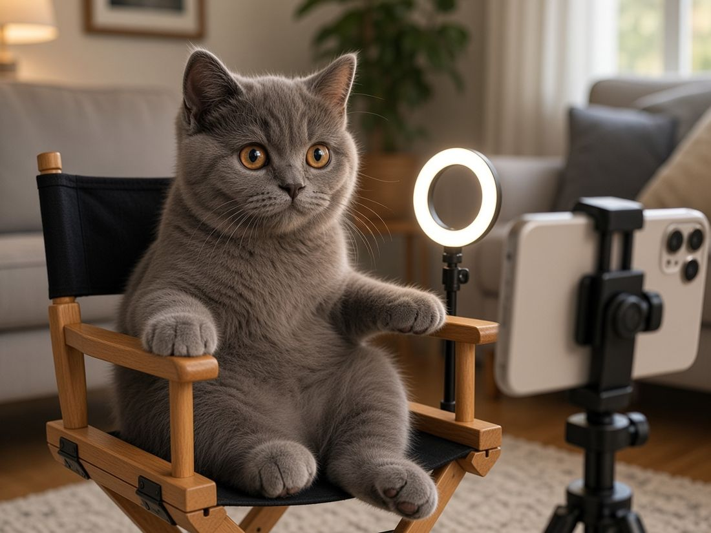
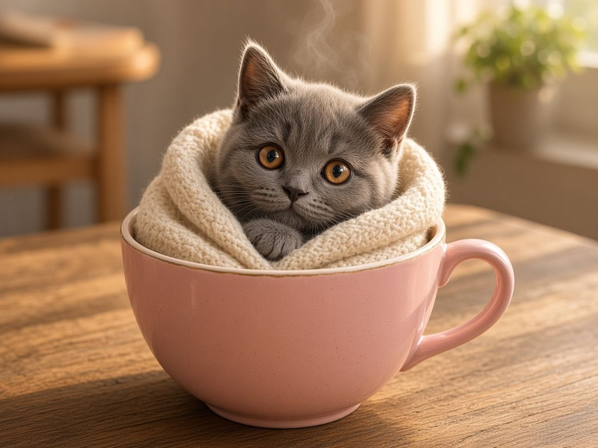
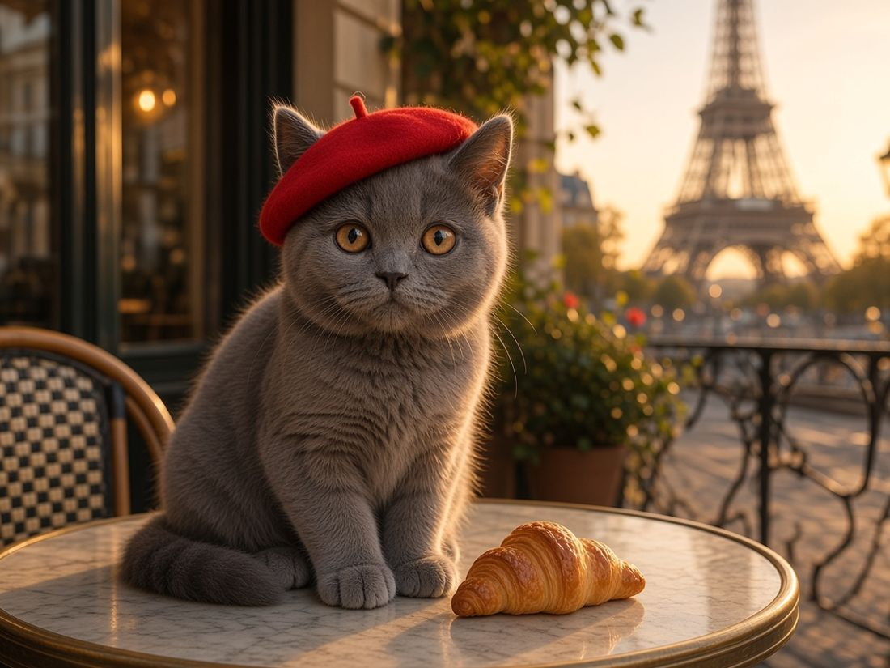
The real Buffy
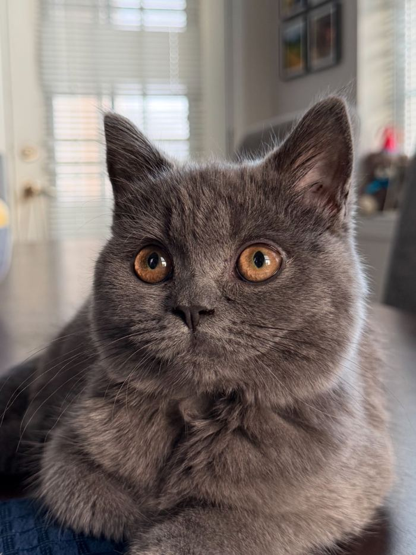
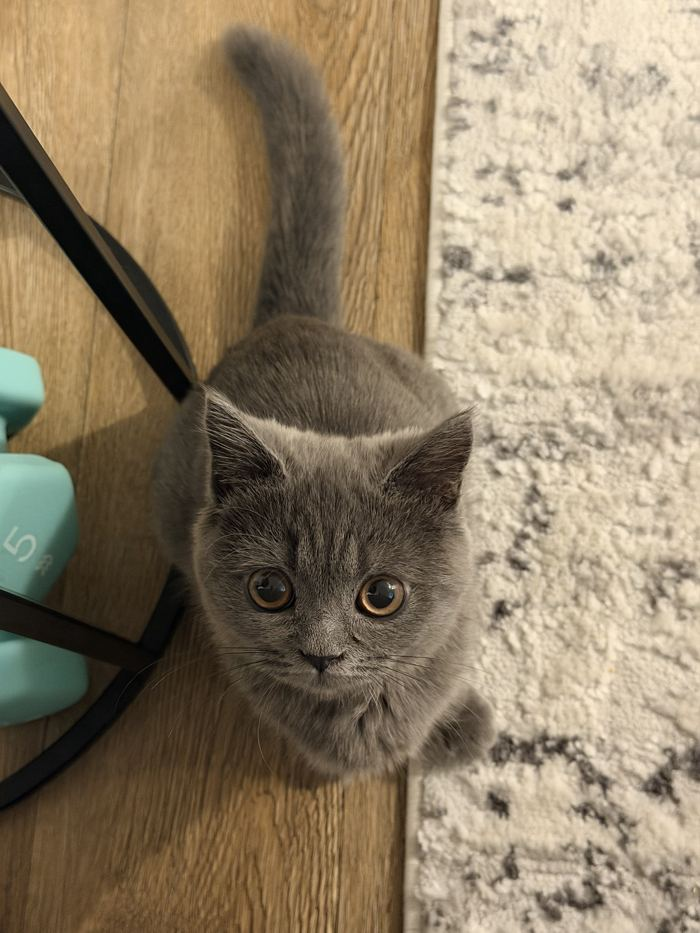
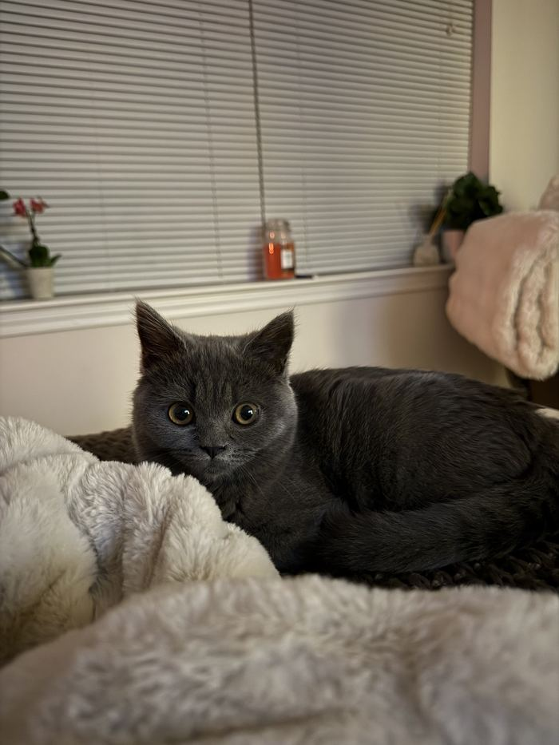
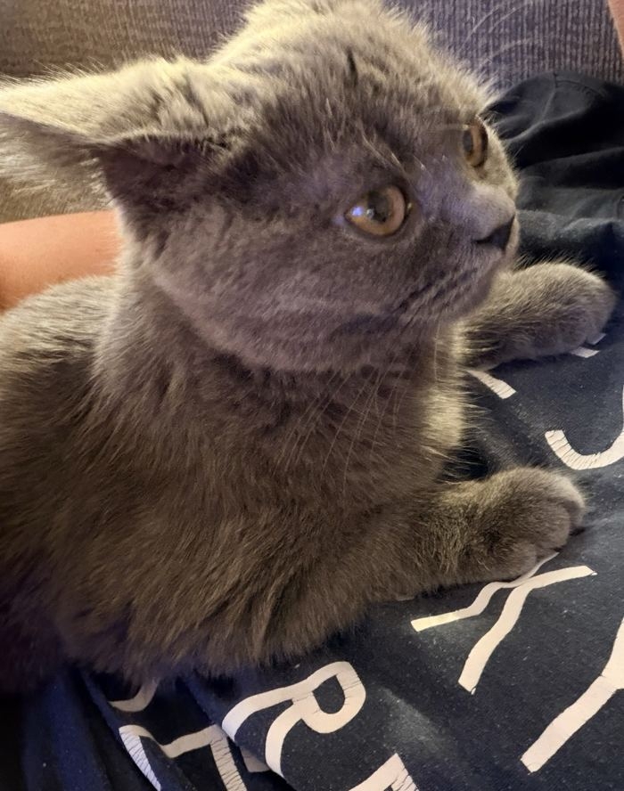
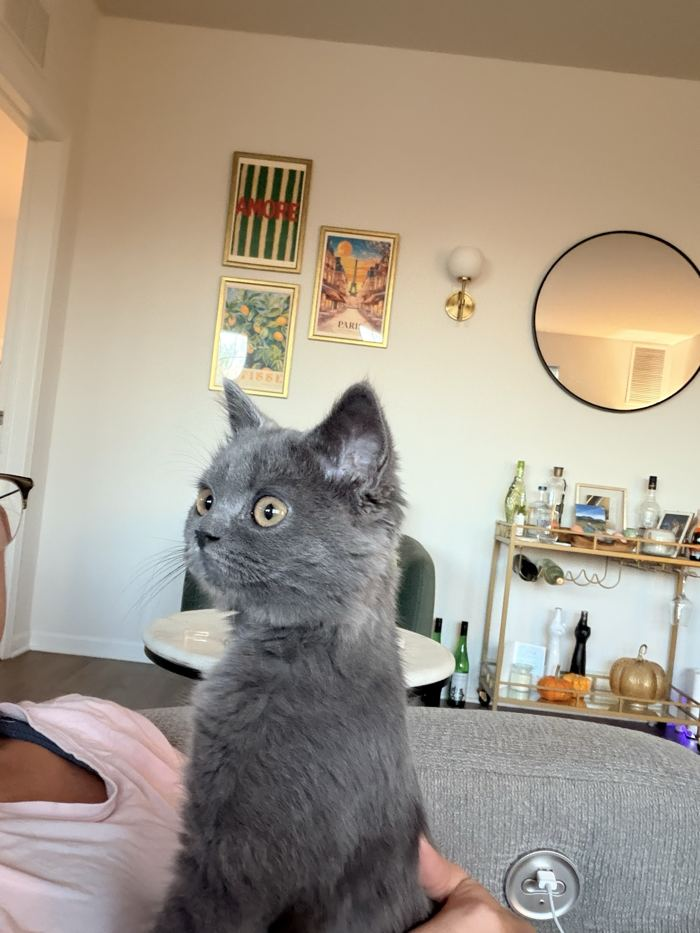
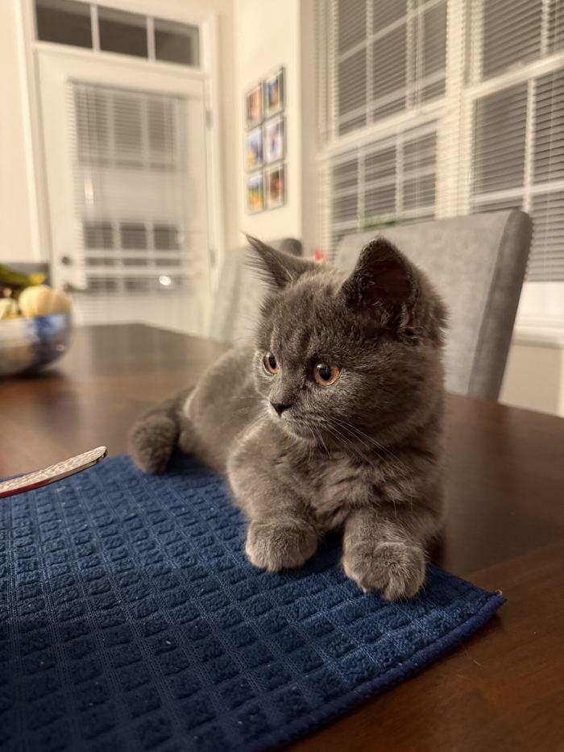
📚 Mini glossary
- Grok
- Your AI assistant. You text it like a friend who's great at planning.
- Prompt
- A message you send to Grok. A long one is like a job description.
- Connector / plugin
- An app your Grok can use for you (like Buffer). You sign in once.
- Skill
- A saved recipe: instructions Grok reuses every time.
- Routine
- An alarm that makes Grok do a task automatically, like a daily idea drop.
- Hook
- The first 1–2 seconds of a video, the part that stops people scrolling.
- Format
- A type of video, like POV, reaction or a series.
- Series
- The same kind of video repeated, with episode numbers.
- POV
- "Point of view": on-screen text tells a little story as if the viewer is in it.
- Trending sound
- A song or audio clip lots of people are using right now.
- Completion rate
- The % of viewers who watched to the end.
- Watch time
- How long people watched, on average.
- Saves / shares
- People keeping your video, or sending it to friends.
- Analytics
- The numbers TikTok shows you about each video.
- Collab
- Making a video together with another account.
💌 Comment-reply plan